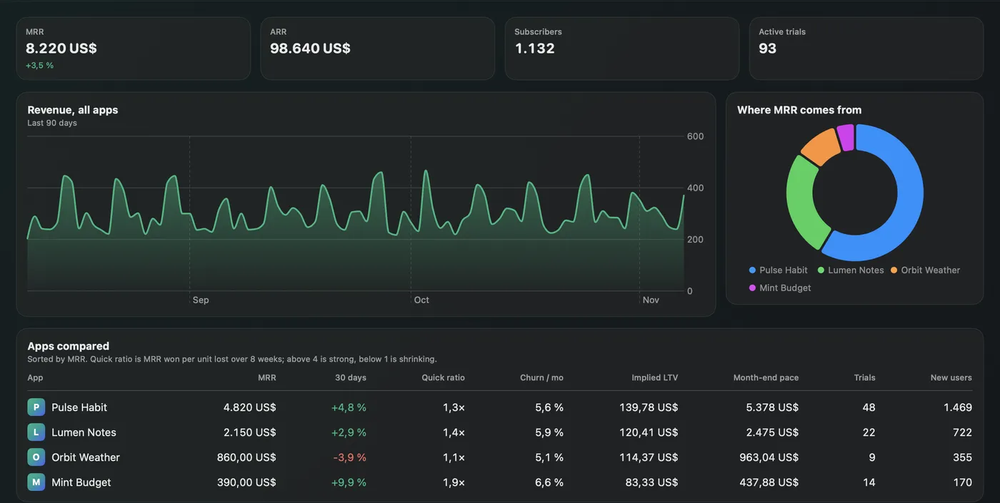
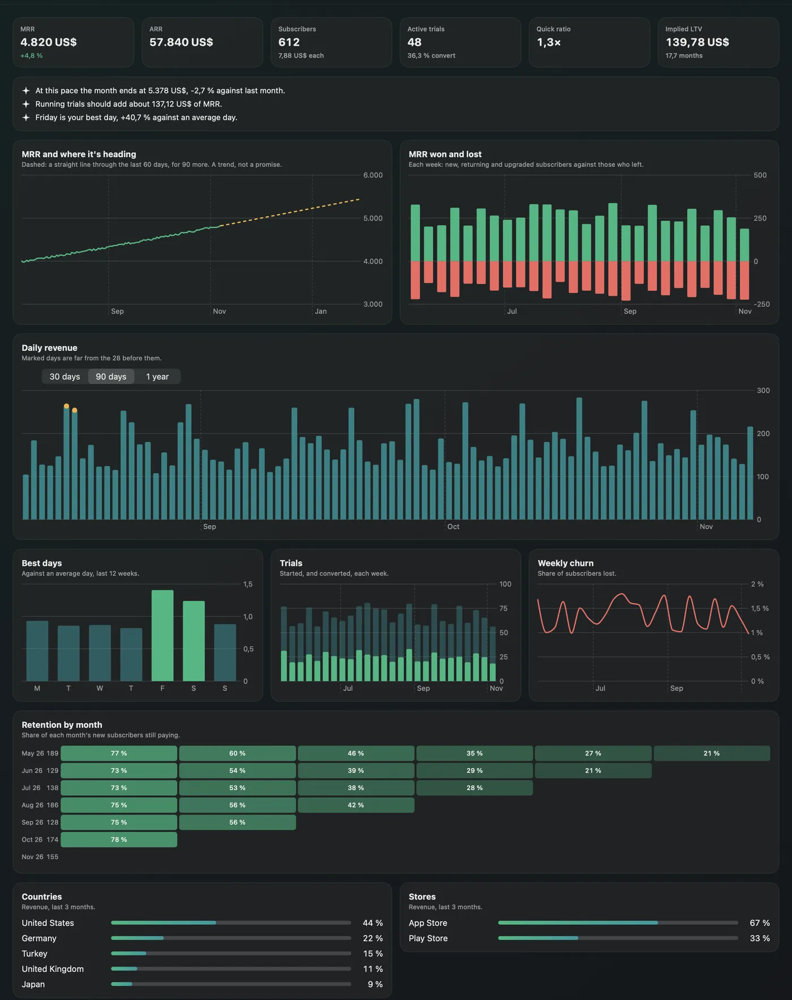

Every app in one table
Totals added up per currency, never across currencies, and one row per app. Sorted by MRR, so a slipping app can't hide on a page you didn't open.
| App | MRR | 30 days | Quick ratio | Churn / mo | Implied LTV | Month-end pace |
|---|
MRRadar sits in your Mac's menu bar and follows everything you run on RevenueCat. It puts your apps side by side and works out what no single chart shows.
What it adds over the dashboard
RevenueCat's numbers are the source. MRRadar reads them for every app you follow, lays them side by side and works out what they imply. The numbers below are made up.
Totals added up per currency, never across currencies, and one row per app. Sorted by MRR, so a slipping app can't hide on a page you didn't open.
| App | MRR | 30 days | Quick ratio | Churn / mo | Implied LTV | Month-end pace |
|---|
A straight line through the last 60 days, drawn 90 days ahead. It says what the recent trend implies, with no promise attached.
Where this month lands at the pace of the last 14 days.
MRR won per unit lost over 8 weeks. Above 4 is strong, below 1 is shrinking.
What a subscriber is worth, from MRR per subscriber and monthly churn.
The MRR that running trials should add at your real conversion rate.
Revenue that stands out from the 28 days before it gets marked, so you see the launch or the outage without looking for it.
Each weekday against an average day, over the last 12 weeks.
The share of each month's new subscribers still paying, month after month.
In the app


Screenshots use MRRadar's made-up demo apps.
Alerts
Mac notifications with your own thresholds, and on your iPhone and iPad through Remote Code.
Remote Code on iPhone
Remote Code brings MRRadar to your iPhone and iPad as a tab, with alerts.
Install MRRadar and switch it on in Remote Code's settings, on the Mac or the iPhone.
Remote Code starts MRRadar's hub on the Mac when the app isn't running, so alerts keep coming.
The hub listens on 127.0.0.1 only, its token is in a 0600 file, and the phone reaches it over Remote Code's encrypted link.
Setup
MRRadar reads your data through rc, RevenueCat's official open-source CLI. If it's missing, MRRadar installs it with Homebrew, or from the official release after checking the published checksum.
Your browser opens RevenueCat and rc keeps the sign-in. You can use a REST API v2 secret key instead, stored in your Keychain.
Pick the projects to follow. The first full report takes about half a minute per app.
Optional. Turn on the alerts you want and set your thresholds.
Privacy
Your data travels between your Mac and RevenueCat through the official CLI. MRRadar has no server, no account of its own and no analytics.
MRRadar's source protocol only has GET. It has no way to refund, grant or change anything in your account.
There is nothing to sign up for, and nothing of yours on a server of ours. There is no such server.
rc does the sign-in and token refresh, so MRRadar never holds a token.
If you prefer a secret key, it stays in the Keychain and reaches rc through its environment, never its arguments.
Apart from project icons from the address RevenueCat gives, MRRadar makes no other requests, except the GitHub download during setup if rc needs installing, and the update check.
Everything is kept in ~/Library/Application Support/MRRadar. Delete the folder and it's gone.
Free and open source, under the MIT license.
macOS 15 Sequoia or later · a RevenueCat account
Or with Homebrew:
brew tap ardasnturk/mrradar https://github.com/ardasnturk/mrradar
brew install --cask mrradarFree Mac apps that work together.
Try it without an account:
open -a MRRadar --args --demoFAQ
macOS 15 or newer and a RevenueCat account. MRRadar itself is free.
No. rc can refund, grant and cancel, but MRRadar only ever sends GET requests. The app is for looking, so a mistake can't cost anyone money.
Headline numbers every 15 minutes and full charts every 6 hours, both adjustable. RevenueCat allows 25 chart requests a minute, so MRRadar paces itself.
Totals are shown per currency and never added together, because a conversion rate would add a number nobody asked for.
It's a least-squares line through 60 days, and the app labels it as a trend. A fancier model would look more certain than the data of a small app allows.
Yes. Run open -a MRRadar --args --demo to open it with made-up apps.
Only for the iPhone and iPad. MRRadar works on its own on the Mac.
Quit MRRadar and delete it (or brew uninstall --zap --cask mrradar). Remove ~/Library/Application Support/MRRadar for a clean slate.
No. MRRadar is an independent project that uses RevenueCat's official CLI. It is not affiliated with or endorsed by RevenueCat.